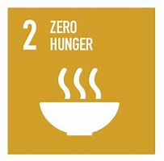
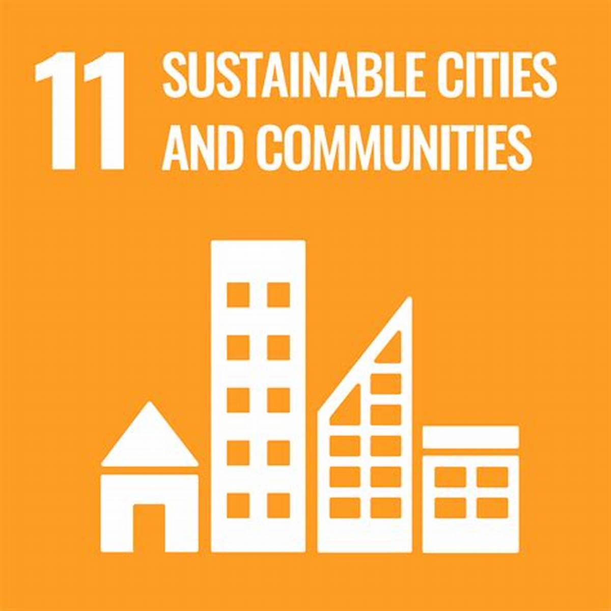

Feed Needy, Fight Waste
Join us by donating surplus food.
Together, we reduce food waste and nourish communities by connecting surplus food with those who need it most
Food Forward's Impact: Aligning with Key Sustainable Development Goals (SDGs)



About Us
At Food Forward, we believe that no food should go to waste. Our mission is to bridge the gap between surplus food and those in need by creating a seamless platform where food donors—restaurants, grocery stores, and individuals—can connect with charities, shelters, and communities facing food insecurity.
Through technology and community-driven action, we make food donation simple, efficient, and impactful. Join us in building a waste-free and hunger-free world. Every meal matters. Every action counts.
Be a part of the movement. 🌱🍽️✨
Donate Now